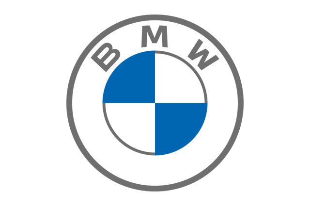

NANO GEARS

BMW iX
Price : $ 87,100

The BMW iX is a battery-electric mid-size luxury crossover SUV manufactured and marketed by the German automobile manufacturer BMW. It was unveiled in concept form named Vision iNext at the 2018 Paris Motor Show, and then as fully production-ready in November 2020. The iX is the first purpose-built electric vehicle by BMW since the i3 from 2013, and the fourth BMW i sub-brand model.
Copyright (c) 2023. All rights reserved. Saroosh Shahid
Design by Saroosh Shahid
Programmed by Saroosh Shahid